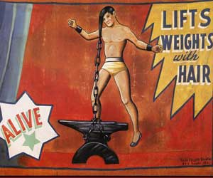

|
| Home|Talent|Cosmetic|Deformity|Abnormal|Ethnological |
WeightliftersStrong men who could lift a lot of weight were another part of the talent potion. As the image on the left depicts, some men were even able to lift abrurd amont of weight with his hair: don't try this at home, kids. Weightlifting is especially popular today with the uprise of the #FitFam and the wild popularity of CrossFit. |